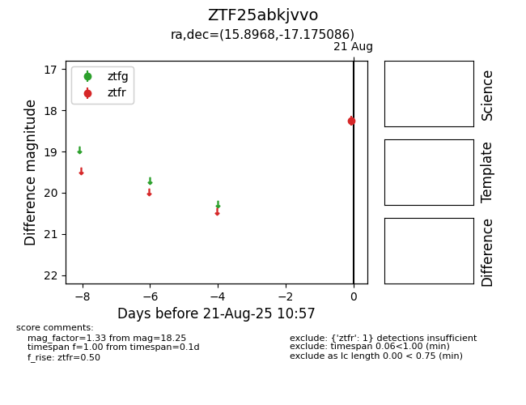

Target ZTF25abkjvvo at 2025-08-21 10:57, see:
FINK: fink-portal.org/ZTF25abkjvvo
Lasair: lasair-ztf.lsst.ac.uk/objects/ZTF25abkjvvo
ALeRCE: alerce.online/object/ZTF25abkjvvo
alt names
ZTF25abkjvvo (ztf,alerce)
coordinates:
equatorial (ra, dec) = (15.8968,-17.17509)
galactic (l, b) = (139.3114,-79.65838)
photometry
last ztfr=18.25
1 ztfr detections
